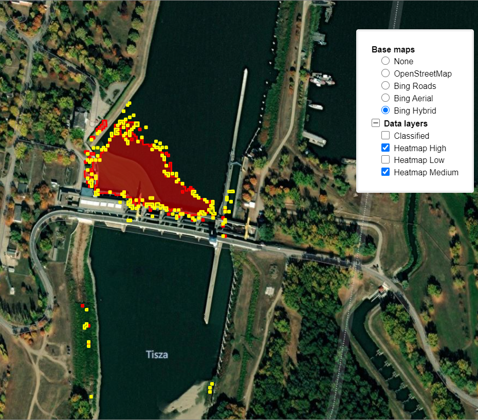

Description
Our monitoring system automatically searches for newly recorded satellite images and downloads them on a daily basis. After this a Random Forest model classifies the images and displays the results in this web application.Features
- Location: You can choose from four previosly set locations: Kisköre, Lake Călinești, Pusztazámor and Рахів
- Date: It can be changed using the swipe. You can select from the last five most recent days when the cloud cover over the areas was 0%.

Publications
-
Waste Detection and Change Analysis based on Multispectral Satellite Imagery
Dávid Magyar, Máté Cserép, Zoltán Vincellér, Attila D. Molnár
Proceedings of KEPAF, 2023